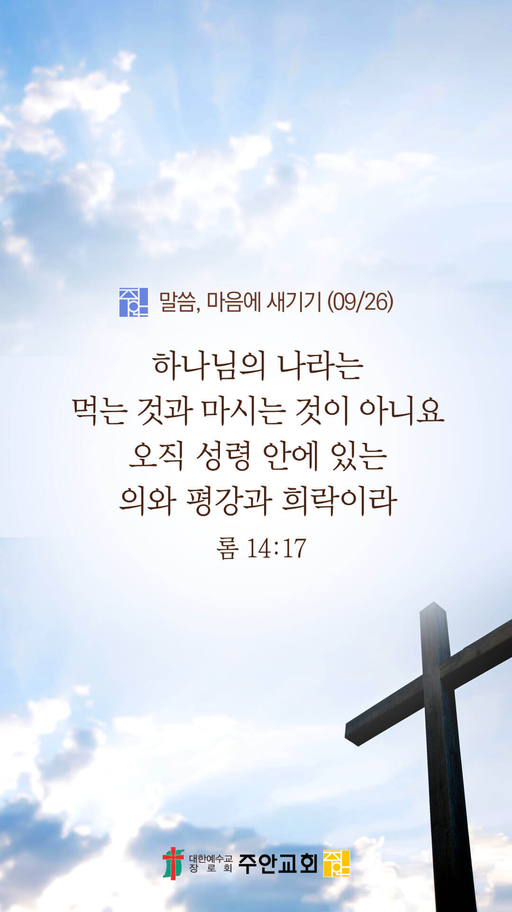

온라인 기도실 안내
2021년 09월26일(일)~10월 02일(토)
- 온라인 기도실은 온 회중이 함께 주님 앞으로 나아가는 자리입니다
- 30분 정도 여유를 가지고 하시기 바랍니다
- 말씀과 묵상, 찬양과 기도로 나아갑니다
- 배경 음악이 나올 수 있습니다 볼륨을 조절해주세요
준비가 되셨으면 아래의 버튼을 눌러주세요
할렐루야
내 영혼아 여호와를 찬양하라
시 146:1
- 가사를 묵상하며 읽습니다
약할 때 강함 되시네
나의 보배가 되신 주
주 나의 모든 것
주안에 있는 보물을
나는 포기할 수 없네
주 나의 모든 것
예수 어린양 존귀한 이름
예수 어린양 존귀한 이름
할렐루야
내 영혼아 여호와를 찬양하라
시 146:1
- 가사를 묵상하며 읽습니다
십자가 죄 사하셨네
주님의 이름 찬양해
주 나의 모든 것
쓰러진 나를 세우고
나의 빈 잔을 채우네
주 나의 모든 것
예수 어린양 존귀한 이름
예수 어린양 존귀한 이름
할렐루야
내 영혼아 여호와를 찬양하라
시 146:1
약할 때 강함 되시네 by Gina
위의 찬양이 끝나면 말씀읽기를 눌러주시면 됩니다
주의 말씀은 내 발에 등이요
내 길에 빛이니이다 (시119:105)
오늘의 말씀입니다
음악 소리가 크면 조절하시기 바랍니다

마음의 묵상
롬 14:17
“하나님의 나라는 먹는 것과 마시는 것이 아니요 오직 성령 안에 있는 의와 평강과 희락이라”
1. 하나님의 나라는 어떤 것이 아니라고 말씀하나요?
2. 그럼 하나님의 나라는 어떤 것이라고 말씀하나요?
3. 당신의 영이 성령 안에서 의와 평강과 희락으로 충만한가요?
저의 삶의 자리가 하나님 나라 되게 하소서
회개, 삶의 방향을 바꾸는 결정
주님께 숨기지 않으면 사함을 받습니다
“내가 이르기를 내 허물을
여호와께 자복하리라 하고
주께 내 죄를 아뢰고
내 죄악을 숨기지 아니하였더니
곧 주께서 내 죄악을 사하셨나이다”
- 시편 32:5 -
3분 정도 회개하며 주님 앞에 나아갑니다
사슴이 시냇물을 찾기에 갈급함 같이
시 42:1
- 다음의 말씀을 소리 내어 읽습니다
[시편 32장 1-2절]
1 허물의 사함을 받고 자신의 죄가 가려진 자는 복이 있도다
2 마음에 간사함이 없고 여호와께 정죄를 당하지 아니하는 자는 복이 있도다
하나님 나라
1. 하나님의 나라가 속히 이 땅에 임하게 하소서
하나님 아버지,
코로나19 백신이 모든 나라에 공급이 되게 하시고, 치료제가 속히 개발되게 하소서.
전 세계 모든 교회가 고난과 슬픔 가운데 있는 이들을 섬기고 위로하는 사랑의 공동체가 되게 하시고,
이들을 통하여 이 땅 가운데 하나님의 위로와 사랑이 전해지게 하소서.
간절한 마음으로 3분 정도 기도합시다
남과 북
2. 남북한이 속히 복음으로 통일되게 하소서
하나님 아버지,
생존을 위하여 몸부림 치고 있는 북한 주민들에게 살 길을 열어주소서.
그들에게 필요한 식량과 의약품이 속히 전달되게 하시고, 복음도 전해져서 북한 주민들의 영육이 살아나게 하소서.
간절한 마음으로 3분 정도 기도합시다
대한민국
3. 우리나라가 하나님을 경외하는 나라가 되게 하소서
하나님 아버지,
하나님의 뜻에 반하는 법안(건강가정기본법, 평등법 등)들이 폐기되게 하소서. 장기화된 코로나19와 사회적 거리두기,
청년 실업률과 극심한 빈부격차, 높은 집값으로 어려움을 겪고 있는 이 땅의 가정들을 위로하여 주소서.
이들을 도울 수 있는 지혜롭고 정의로운 지도자들과 정책이 세워지게 하소서.
간절한 마음으로 3분 정도 기도합시다
한국교회
4. 한국교회가 성령으로 새롭게 부흥되게 하소서
하나님 아버지,
한국교회가 주님의 빛과 소금의 역할을 감당하게 하소서. 한국교회의 성도들이 먼저 교회 안에서 서로 사랑하고 섬기게 하시고,
이웃과 지역사회에는 선한 행실로 하나님의 사랑을 전하게 하소서.
이로 인하여 세상 사람들이 한국교회를 보며 하나님께 영광을 돌리는 놀라운 역사가 일어나게 하소서.
간절한 마음으로 3분 정도 기도합시다
주안교회
5. 주안교회가 다음 세대를 세우는 선교적 교회가 되게 하소서
하나님 아버지,
주안의 모든 성도들이 각자의 삶의 자리가 주님께 보내심을 받은 선교의 자리임을 기억하게 하소서.
우리를 이 땅 가운데 보내신 주님의 사명과 목적이 이끄는 삶을 살아가게 하시고,
이로 인하여 주안의 성도들이 거하는 곳마다 주님의 영광이 나타나게 하소서.
간절한 마음으로 3분 정도 기도합시다
감사의 기도
- 오늘 기도를 인도하신 주님께 감사를 올려드립니다
- 아래의 구절을 읽고 주님께 감사의 마음을 올려드립시다
“주는 나의 은신처이오니
환난에서 나를 보호하시고
구원의 노래로 나를 두르시리이다”
- 시편 32장 7절 -
고요한 가운데 잠시 침묵하시기 바랍니다
파송, 세상을 향하여
- 오늘의 온라인 기도를 마쳤습니다
기도를 들으신 주님께서 평안히 가라 하십니다
주님께서 우리와 함께 하시니 두려울 것이 없습니다
새벽을 깨우며
- 새벽기도회 안내입니다